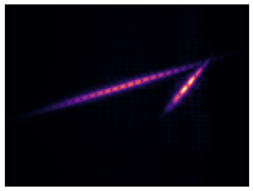
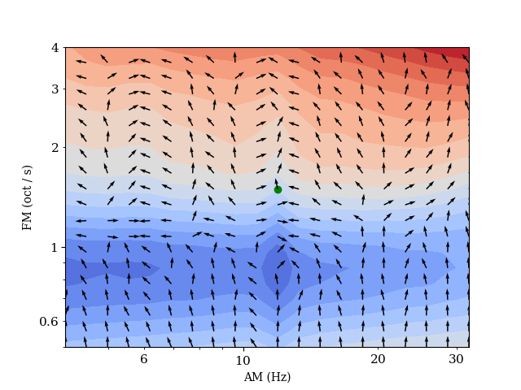
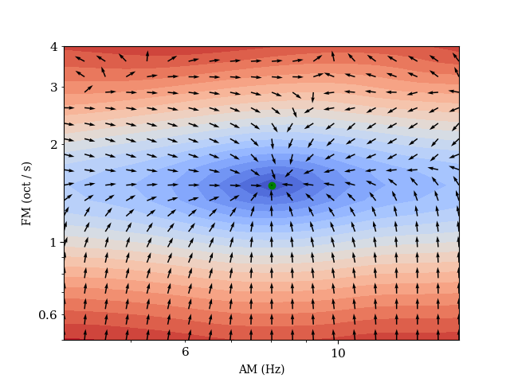

Parameter Estimation by Gradient Descent#
{kind=link}
We reuse the differentiable AM/FM chirp synthesizer from the GEAR chapter. This synth can be interpreted as a sequence of chirp events, governed by a density parameter that determines the number of events and the chirp rate which governs the overall duration of the auditory object. Therefore, we seek a listening device that is able to tune the parameters of a synthesizer to quanity the number of chirplet events and the overall duration of the sound that is dictated by the rate of frequency modulation.
The plots below illustrate the loss surface and gradient fields of the multiscale spectrogram loss and time-frequency scattering loss with respect to a fixed target sound. We vary the synthesizer’s parameters on a 2D grid, and compute the loss with the target sound and derive the resulting gradients with respect to the two input synthesis parameters. These plots show us whether the auditory similarity objectives are suitable for modelling these synthesis parameters in an inverse problem of sound matching by gradient descent, which is common in DDSP-style learning frameworks.
First, we assess the commonly used multiscale spectral loss. We clearly see that the loss surface lies on a 2D plane, and is insensitive to variations in the density of events (AM). Furthermore, we observe that the global minima is not localized around the target sound.
{kind=link}
We add a time-shift to the target sound to demonstrate the effectiveness of time-frequency scattering to represent similarity between time-frequency structures at time-scales beyond the microscale. We can see a 3D curved loss surface. The visualization of the gradients computed in JTFS space with respect to \(\theta\) suggests that it is an informative objective proxy measure of similarity between the phyiscal parameters to serve as a basis for optimization.
{kind=link}
Extensions#
Existing work has shown that we can appropriate the JTFS loss for sound matching by stochastic gradient descent directly in the space of the synthesiser’s parameters [1] This framework may not generalize to every possible synthesizer, but offers potential in DDSP problems. Time-frequency scattering is not without limitations: currently, the only differentiable implementation is Kymatio is prohibitively slow. Whereas the multiscale spectrogram loss is very computationally efficient. In the case of differentiable time-frequency analysis, this would incur a recomputation of the scattering paths of every estimated sound at every step of gradient descent. Han Han et al. [2] sought to sidestep the need of repeatedly computing the scattering transform during stochastic gradient descent for sound matching, by computing the Jacobian of the entire training dataset with respect to a physical modellinmg synthesizer’s parameters. Previous work has shown that time-frequency scattering reflects human auditory judgments of similarity, making it a candidate for an objective distance measure in differentiable time-frequency analysis.